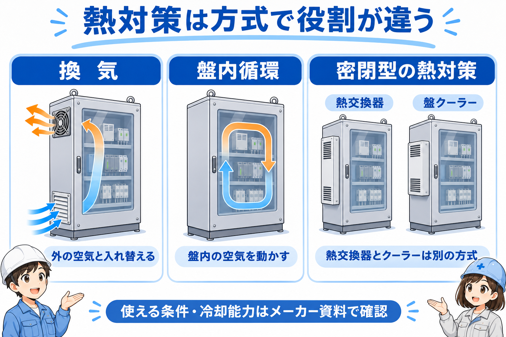
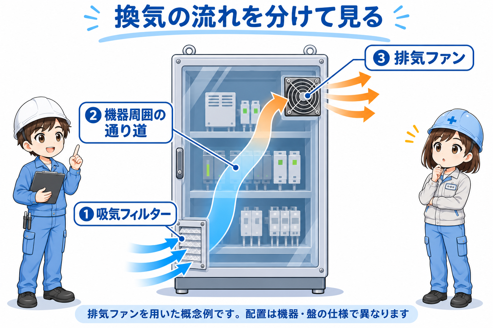
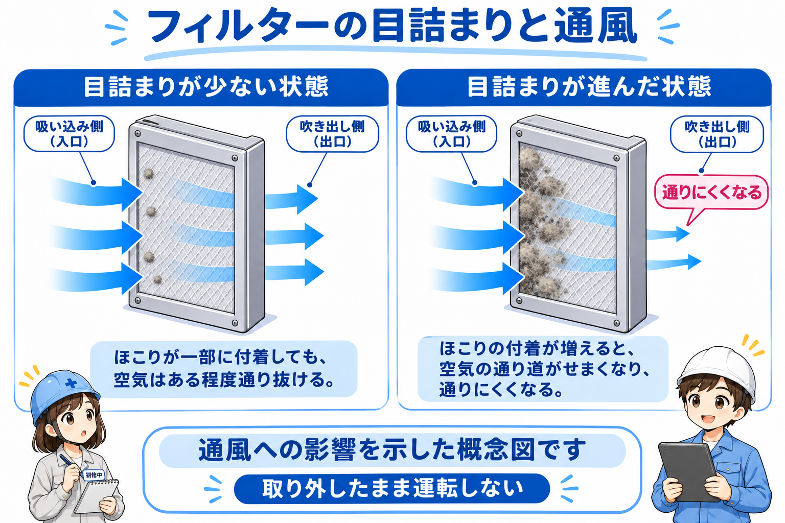
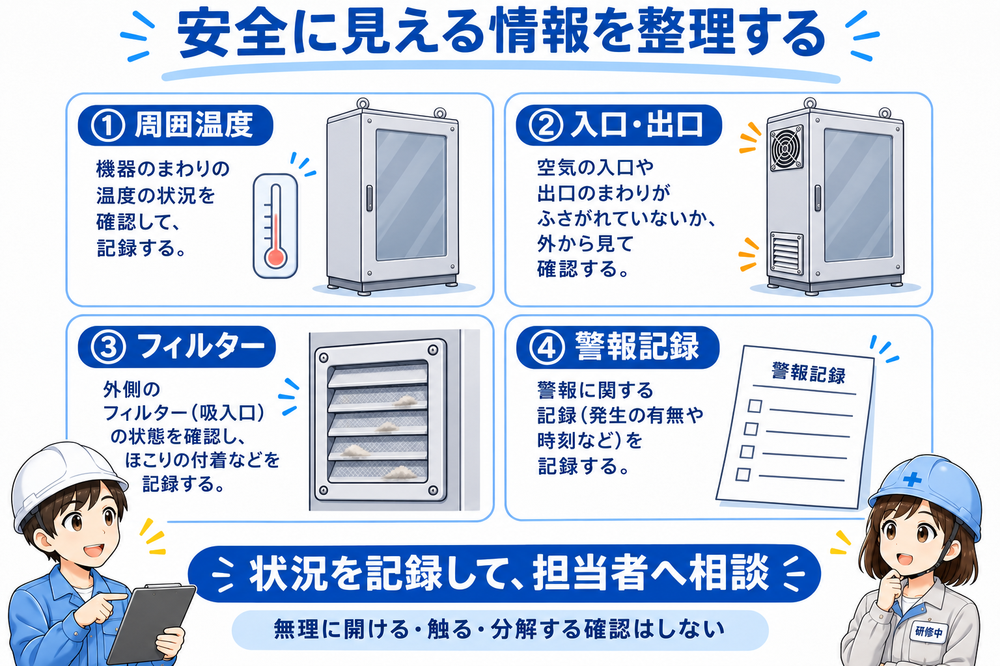

冷却ファン・放熱ファンは何をしている？
スイッチング電源やインバータなど、制御盤の中の機器は運転に伴って熱を出します。発生する熱に対して外へ逃げる熱が不足すると、盤内温度が上がります。機器に定められた使用周囲温度を超えれば、正常な動作や寿命に影響するおそれがあります。
「冷却ファン」「放熱ファン」「盤用換気扇」と呼ばれる部品も、まずはどこへ風を送るものかを確認すると理解しやすくなります。盤の壁に取り付けて外気と入れ替えるものもあれば、盤内の機器の近くで空気を循環させるものもあります。

後輩ファンが付いていれば、盤内はずっと冷たいんですか？

先輩外の空気が暑ければ、換気だけでは限界があるよ。何を使って熱を外へ出しているかを分けて見よう。
換気・盤内循環・密閉型の熱対策を分ける

| 方式 | 主な役割 | 押さえたい条件 |
|---|---|---|
| 換気用ファン | 外気を取り入れ、盤内の熱を含んだ空気を外へ出す | 外気温度と必要な盤内温度、外気のほこり・水分等を確認する |
| 盤内循環ファン | 盤内の空気を動かし、局所的な熱だまりを減らす | 熱を盤外へ逃がす仕組みは別に必要 |
| 空気対空気の熱交換器 | 盤内外の空気を直接混ぜず、温度差で熱を外へ移す | 盤内外の温度差が小さくなると放熱量が小さくなり、外気が盤内と同温以上では温度差による放熱は期待できない |
| 盤クーラー | 冷却機構により盤内の熱を外へ移す | 方式・能力・使用温度・結露対策など製品ごとの条件を確認する |
ここでの熱交換器は、外気との温度差を利用する空気対空気方式の説明です。冷却水を使う方式などをすべて同じ条件で考えないでください。盤クーラーにも方式の違いがあり、「付ければどんな環境でも冷える」とは限りません。
外気を入れたくない環境や、換気では必要温度を守れない場合は、ファンを大きくするだけでなく熱対策の方式そのものを検討します。選定は盤・機器メーカーの資料と設備条件を基に担当者が行います。
吸気・通り道・排気で風の流れを見る

換気には、空気の入口と出口の両方が必要です。ファンを回していても、開口部がふさがっていたり、盤内の配線ダクトや機器が風の通り道を遮ったりすると、熱を十分に逃がせないことがあります。
図は排気側にファンを設けた例ですが、ファンで外気を押し込む吸気方式もあります。「ファンがある場所は必ず排気」とは決めつけません。風向きは対象製品の表示、図面、取扱説明書に従います。
また、入口から入った空気が発熱する機器を十分に通らず、そのまま近くの出口へ抜ける配置では、盤内の一部に熱が残ることがあります。盤全体の温度表示だけでなく、必要な機器の周囲温度をどこで監視する設計かも重要です。
最大風量の数字だけでは選べない
カタログの最大風量は、その値が盤に取り付けた状態でも出るという意味ではありません。フィルターやルーバー、盤内の構造が空気の通りにくさを生み、実際の風量に影響します。
メーカーの選定資料では、発熱量、周囲温度、目標の内部温度、必要風量を確認し、ファンの風量と静圧の特性を踏まえて検討します。初心者の段階では「回っている＝必要な量の空気が流れている、ではない」と覚えると十分です。
フィルターの目詰まりで冷えにくくなる理由

フィルターは、空気と一緒に盤内へ入るほこりなどを抑える部品です。一方で、空気を通す抵抗にもなります。汚れが蓄積して目詰まりすると、ファンが回っていても換気量が減り、冷却効果が低下することがあります。
「少し汚れているだけだから大丈夫」とも、「ほこりが見えるからすぐ故障する」とも断定できません。使用環境、フィルターの種類、機器の温度、メーカーの保守指示を合わせて判断します。
清掃・交換の周期や方法は製品によって違います。すべてのフィルターが水洗いできるわけではありません。指定外の材料へ交換したり、通風をよくするためにフィルターを外したまま運転したりすると、異物侵入や保護性能への影響が生じるため、自己判断で行わないでください。
冷えにくい・ファンが止まっているときに整理すること

| 安全に確認できる情報 | 担当者へ伝える内容 |
|---|---|
| 温度表示・周囲の状況 | いつから変化したか、室温や設備の運転状態も変わったか |
| 入口と出口の外観 | 物やカバーなどで開口部がふさがれていないか |
| 外から見えるフィルター | ほこりや油分の付着、前回の保守記録 |
| ファンの状態表示や警報 | 停止・異音・警報の有無、発生時刻、繰り返し方 |
温度スイッチなどで必要なときだけファンを動かす設備もあります。停止していることだけで故障とは決めず、設備の運転条件と警報を照合します。ただし、異常な温度上昇や警報、焦げ臭さなどがある場合に「温度制御だろう」と放置してはいけません。現場の異常時手順に従い、担当者へ連絡します。
初心者が確認する範囲は、表示や外観など安全に確認できる情報までです。ファンへ指や物を差し込む、通電したままガードを外す、盤内を触る、勝手に配線・設定を変えるといった確認は行いません。
点検・清掃・交換は、権限と知識のある担当者が、設備の停止、電源遮断、再投入防止、必要な無電圧確認、残留エネルギーへの対処を含む現場手順とメーカーの取扱説明書に従って実施します。
後輩風が弱いなら、扉を開けておけばいいですか？
先輩それを通常の対策にはしないよ。感電や異物の侵入など別の危険が出るから、温度と風の通り道を記録して、設備に合う対策を相談しよう。
よくある疑問
ファンを大きくすれば解決する？
必ず解決するわけではありません。外気温度、開口部、通風抵抗、発熱量、取付条件などが関係します。電源仕様や保護性能も含めて選定が必要です。既設品のサイズだけを見て交換しないでください。
盤内は何℃なら正常？
すべての制御盤に共通する一つの温度では決められません。搭載機器の許容周囲温度、設置条件、設備の管理基準を確認します。測定する場所によっても温度が異なるため、温度表示の値だけで全機器の使用条件を満たすとは限りません。
フィルターがきれいなら冷却は十分？
きれいでも、外気が高温、入口や出口がふさがっている、必要風量が不足しているなど別の要因は残ります。フィルターだけでなく、熱の発生と外へ逃がす経路を合わせて見ます。
まとめ：ファン単体ではなく熱の逃げ道を考える
制御盤の冷却では、「換気する」「盤内を循環させる」「外気と混ぜずに熱を逃がす」を分けて考えることが出発点です。換気用ファンを使う場合は、入口・機器周囲の通り道・出口、フィルター、周囲温度が一組になります。
ファンがあることや回っていることだけで安心せず、普段との違いを安全に記録して担当者へ伝える。その見方が、無理な作業をせずに盤内温度のトラブルを考える第一歩です。
メーカー公式資料・技術参照元
最終内容更新：
公式資料確認日：2026年11月15日。この記事は基礎的な考え方の説明です。実際の選定・取付・点検では、対象機種の最新資料と設備の手順を優先してください。
- オリエンタルモーター：ファンモーターの選定手順 ：発熱量、温度条件、必要風量、実装時の圧力損失。
- オリエンタルモーター：プロペラファン用フィルター ：フィルターと通風特性、目詰まりによる冷却効果低下。
- 日東工業：熱関連機器 ：換気、熱交換器、クーラー等の方式。
- オリエンタルモーター：DCファン取扱説明書 HF-3145 ：安全上の注意と点検時の電源遮断。機種別資料であり全製品の仕様を代表するものではありません。
- 日東工業：FN-BN換気扇セット ：温度調節器による運転制御の製品例。すべての盤の動作仕様を示すものではありません。